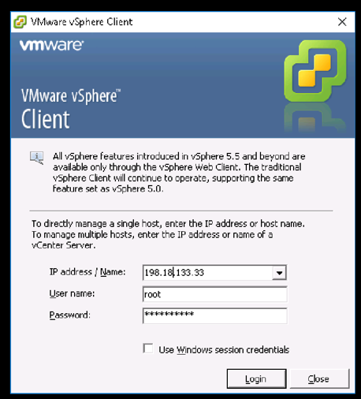
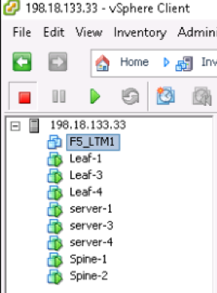
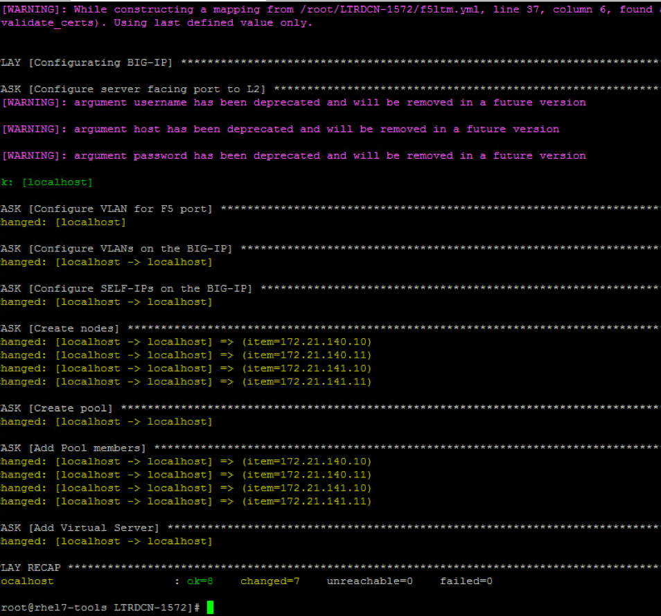

Appendix A: L4-L7 insertion
In this section, you will insert F5 BIG-IP load balancer into the fabric. - First send out a http request from server-4 to a VIP, and you will notice no http service enabled on VIP. - Run the playbook to enable http service on the VIP with server-1, server-2, server-3 and server-4 in the server pool. - After successful execute the playbook, you will notice http request to VIP is load balanced across three servers.
Step 1: Power on F5 Virtual Machine
-
open VMware vSphere Client to login ESXi (198.18.133.33) using crendential root/C1sco12345

-
Open up the VM under host 198.18.133.33, and power on VM F5_LTM

Step 2:
Switch to MTPuTTY install prerequisites packages on Ansible node
[root@rhel7-tools LTRDCN-1572]# pip install f5-sdk
[root@rhel7-tools LTRDCN-1572]# pip install setuptools --upgrade
[root@rhel7-tools LTRDCN-1572]# pip install bigsuds
[root@rhel7-tools LTRDCN-1572]# pip install netaddr
Step 3:
- Switch to ‘MTPuTTY’ ssh into server-4 and send http request to VIP 172.21.140.100 from server-4 using curl
[root@server-4 ~]# curl http://172.21.140.100
curl: (7) couldn't connect to host
[root@server-4 ~]#
Step 4:
- Switch to Atom, create new file name ‘f5ltm.yml’ under project folder LTRDCN-1572
---
- name: Configurating BIG-IP
hosts: localhost
gather_facts: false
tasks:
- name: Configure server facing port to L2
nxos_interface:
interface: eth1/4
mode: layer2
username: "{{ user }}"
password: "{{ pwd }}"
transport: nxapi
host: "198.18.4.104"
- name: Configure VLAN for F5 port
nxos_switchport:
interface: eth1/4
mode: access
access_vlan: 140
username: "{{ user }}"
password: "{{ pwd }}"
transport: nxapi
host: "198.18.4.104"
- name: Configure VLANs on the BIG-IP
bigip_vlan:
server: "198.18.4.10"
user: "admin"
password: "admin"
validate_certs: False
name: "External"
tag: "140"
untagged_interface: "1.1"
validate_certs: "no"
delegate_to: localhost
- name: Configure SELF-IPs on the BIG-IP
bigip_selfip:
server: "198.18.4.10"
user: "admin"
password: "admin"
validate_certs: False
name: "172.21.140.50"
address: "172.21.140.50"
netmask: "255.255.255.0"
vlan: "External"
allow_service: "default"
validate_certs: "no"
delegate_to: localhost
- name: Create static route
bigip_static_route:
server: "198.18.4.10"
user: "admin"
password: "admin"
validate_certs: False
destination: 0.0.0.0
netmask: 0.0.0.0
gateway_address: 172.21.140.1
name: "defult"
delegate_to: localhost
- name: Create nodes
bigip_node:
server: "198.18.4.10"
user: "admin"
password: "admin"
host: "{{item}}"
name: "{{item}}"
validate_certs: "no"
with_items:
- 172.21.140.10
- 172.21.140.11
- 172.21.141.10
- 172.21.141.11
delegate_to: localhost
- name: Create pool
bigip_pool:
server: "198.18.4.10"
user: "admin"
password: "admin"
name: "web-pool"
lb_method: "round-robin"
monitors: "/Common/http"
monitor_type: "and_list"
validate_certs: "no"
delegate_to: localhost
- name: Add Pool members
bigip_pool_member:
server: "198.18.4.10"
user: "admin"
password: "admin"
name: "{{item}}"
host: "{{item}}"
port: "80"
pool: "web-pool"
validate_certs: "no"
with_items:
- 172.21.140.10
- 172.21.140.11
- 172.21.141.10
- 172.21.141.11
delegate_to: localhost
- name: Add Virtual Server
bigip_virtual_server:
server: "198.18.4.10"
user: "admin"
password: "admin"
name: "http-virtualserver"
destination: "172.21.140.100"
port: "80"
enabled_vlans: "ALL"
all_profiles:
- http
pool: "web-pool"
snat: "Automap"
validate_certs: "no"
delegate_to: localhost
Step 5:
- Run playbook f5ltm.yml to provision VIP (172.21.140.100) on F5 and also put all four servers into the server pool.

Step 6:
- Switch to ‘MTPuTTY’ login server-4, and run
curl http://172.21.140.100multiple times, you will see the request is load balanced to differernt servers in the sever pool.
[root@server-4 ~]# curl http://172.21.140.100
<html><body><h1>It works!</h1>
<p> Server-1 172.21.140.10 </p>
<p>This is the default web page for this server.</p>
<p>The web server software is running but no content has been added, yet.</p>
</body></html>
[root@server-4 ~]# curl http://172.21.140.100
<html><body><h1>It works!</h1>
<p> Server-3 172.21.140.11 </p>
<p>This is the default web page for this server.</p>
<p>The web server software is running but no content has been added, yet.</p>
</body></html>
[root@server-4 ~]# curl http://172.21.140.100
<html><body><h1>It works!</h1>
<p> Server-4 172.21.141.11 </p>
<p>This is the default web page for this server.</p>
<p>The web server software is running but no content has been added, yet.</p>
</body></html>